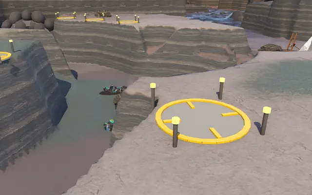
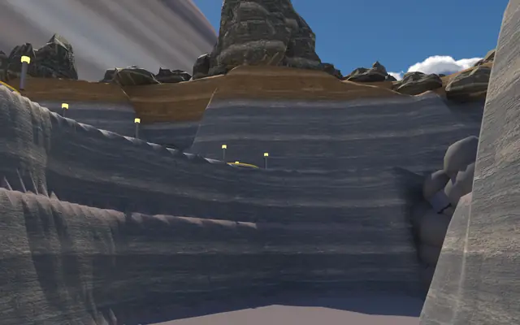
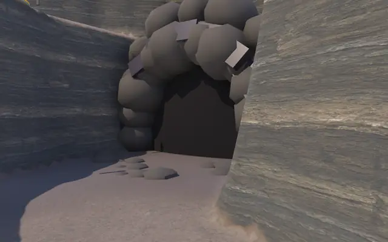
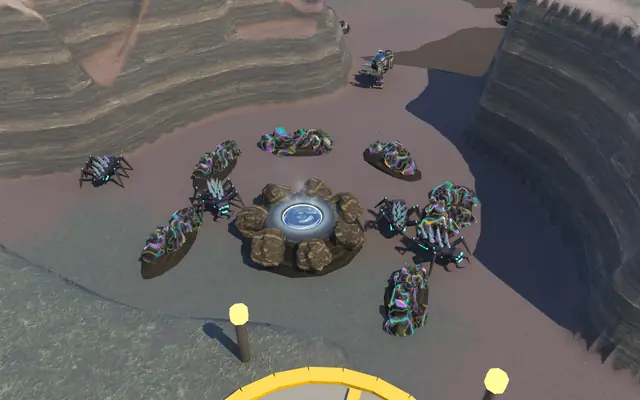
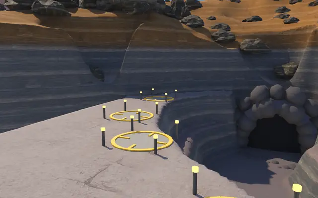
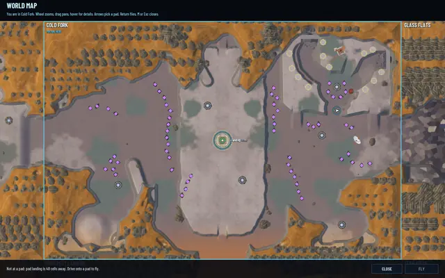
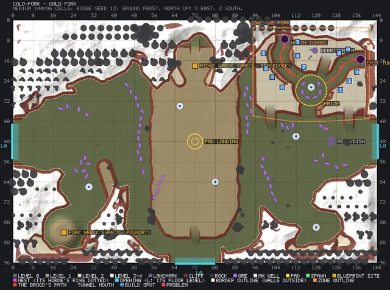

The Fork: the first canyon to hold
The canyon from the plan a day ago has been cut. It's called The Fork, it's in Cold Fork, and it's built for tower defence: the Brood comes out of tunnels at one end, the ore it wants is at the other, and the rims between are where pilots will put their guns. The waves come next.

How it's laid out
The Fork is a mesa in the north-east of Cold Fork. Two arms wind down through it to the canyon floor, each starting at a Brood tunnel, one in the north wall and one in the east. They meet at a basin, and the prize is there: six deposits of 6,000 ore each round an MH well of 6,000. The richest deposit anywhere else in the region holds 3,600.
Ramps lead up to three rims with 12 build spots, marked in amber, overlooking the bends. The old derrick ruin stands on the rim between the arms. A gorge lets pilots walk down onto the floor, so they can fight with their own torches too.
- 2arms, each from a Brood tunnel to the prize
- 36,000ore in six deposits, and 6,000 MH in the well
- 12build spots on three rims
- about 6 sfor a bug to walk 18 cells from tunnel to prize
Down in The Fork

From a rim: a build spot over the arm below.
From the floor, up at a bend. The lamps on top mark the spots.
A Brood tunnel, where the waves will come from.
Shardlings sent down a path, already on the prize.
Build spots by a tunnel's mouth.
Cold Fork on the map, The Fork top right.


How it's built
Region files can now cut canyons, with stepped walls and a darker floor, and they can hold zones: a zone has its tunnels, the paths from each tunnel to the prize, the prize's deposits and well, and the build spots. The region tool checks all of it: that every path runs on open floor joined to the rest, that each tunnel stands at the foot of a wall, that the spots and the prize lie inside the zone. On the plan below the red lines are the Brood's paths.
Bugs sent down a path walk it from the tunnel to the prize, 18 cells in 6 to 6.7 seconds, never more than 1.4 cells off the line, and start mining when they get there.
The plan

The region tool's preview of Cold Fork, The Fork outlined top right.

Every test suite passes: 494 core, 249 server and 85 network.
Coming (landed since)
The waves. The first wave replays until the pilots beat it, then they grow harder, each paying the pilots who fought. If a wave carries off too much of the prize, the Matriarch comes out of her nest and fells every turret in The Fork, and it starts again from wave one.